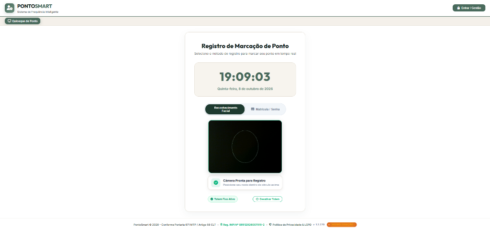
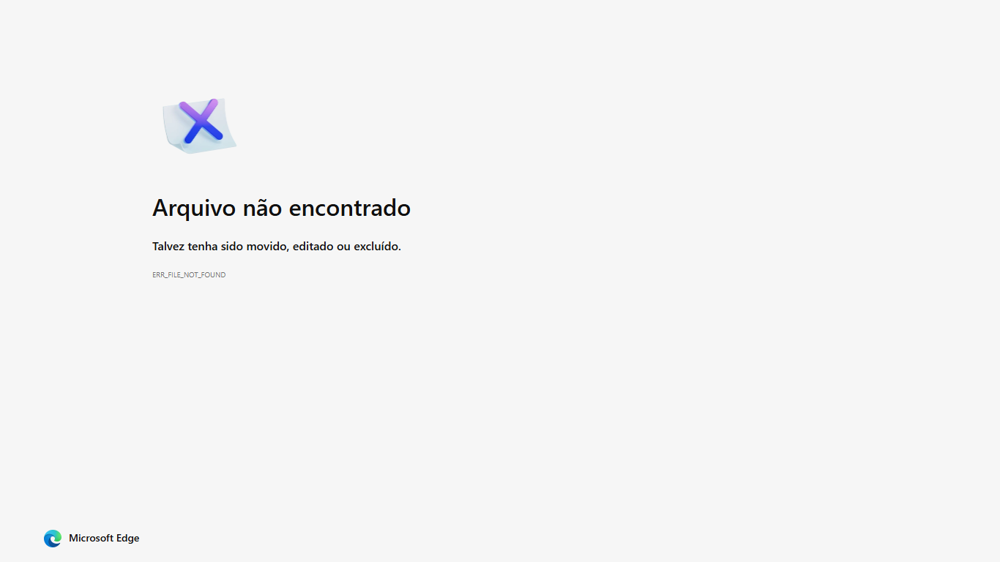
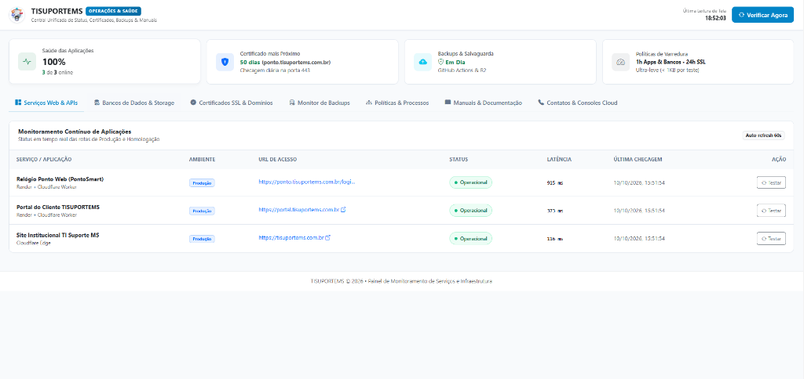
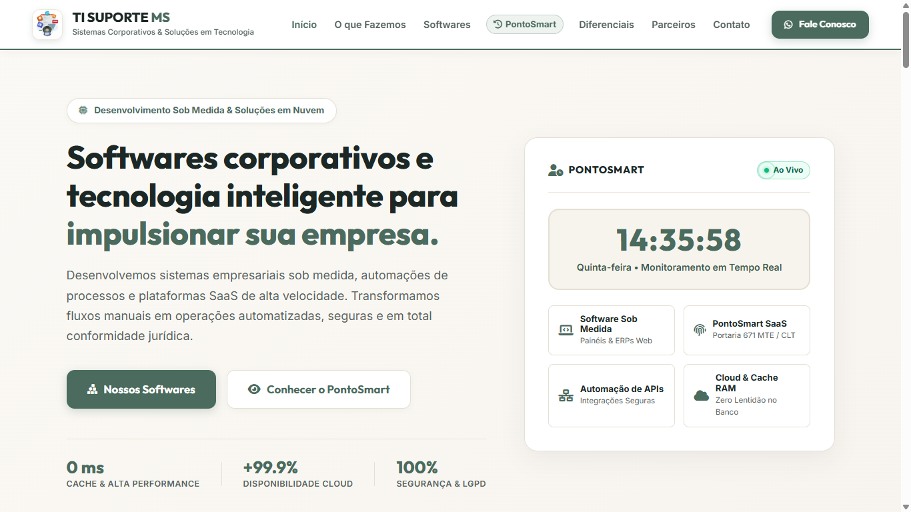

Engenharia de software focada em alta performance, disponibilidade e segurança. Domínio completo de ponta a ponta: desde arquiteturas PWA Offline-First e IA no navegador até microsserviços em Node.js e bancos relacionais otimizados.
Combinação estratégica de engenharia fullstack e sólida bagagem em infraestrutura corporativa para construir sistemas robustos, rápidos e seguros.
Construção de backends resilientes com Express, rotas assíncronas, middlewares de segurança, JWT e alta performance de I/O.
Modelagem relacional estrita, indexação avançada, integridade referencial ACID, JSONB e arquitetura de cache em RAM com zero polling.
Visão computacional client-side (TensorFlow/Face-api.js) no navegador e sincronização em segundo plano com Service Workers e IndexedDB.
Proxy de borda seguro, Cold-Start Interceptor, armazenamento de objetos em Cloudflare R2 / AWS S3 e otimização de latência global.
Aplicações reativas e fluidas com Vanilla JS ES6+, interfaces modernas com Bootstrap 5, acessibilidade e design responsivo.
+10 anos de vivência em servidores Windows/Linux, redes corporativas, Active Directory/Azure AD, compliance LGPD e Portaria 671 MTE.
Páginas de alta conversão projetadas para transformar visitantes em clientes reais. Design moderno, carregamento ultra-rápido e total responsividade.
Painéis internos para gestão de processos, controle financeiro, cadastros e geração de relatórios dinâmicos para a tomada de decisão.
Conexão entre o seu sistema e serviços externos (gateways de pagamento, envio automático de mensagens no WhatsApp, CRMs).
Arquitetura de soluções reais projetadas com foco em confiabilidade, regras de negócio complexas, alta disponibilidade e resultados comprovados.

SaaS • Biometria Facial 1 TelaSaaS completo REP-P em conformidade com a Portaria 671 MTE / LGPD. Biometria facial no navegador via TensorFlow/Face-API, cerca geográfica GPS, PWA Offline-First (IndexedDB), arquitetura Zero-Polling com Cache RAM (0 ms) e Cold-Start Proxy no Cloudflare.

Helpdesk • Service Desk 1 TelaSistema corporativo de helpdesk e chamados para atendimento a clientes. Gestão de tickets em tempo real, painel de triagem, controle estrito de SLAs, upload de evidências e anexos, autenticação granular por perfis (RBAC) e relatórios dinâmicos.

DevOps • Observabilidade 3 TelasPainel unificado de observabilidade, latência e salvaguarda contínua de infraestrutura em nuvem. Inspeção ativa de rotas (Render + Cloudflare), volumetria de bancos (Supabase PostgreSQL) e Cloudflare R2, monitoramento preventivo de SSL e do Certificado A1 ICP-Brasil (Portaria 671 MTE).

Web • Alta Conversão 1 TelaPresença digital corporativa e página de captura B2B com arquitetura ultra-rápida. Design 100% responsivo, SEO estruturado conforme diretrizes W3C, otimização Core Web Vitals (nota máxima no Google Lighthouse) e integração direta com WhatsApp.
Engenharia estruturada com previsibilidade, transparência e entregas iterativas em todas as etapas.
Mapeamento detalhado de regras de negócio, conformidades legais (Portaria 671 / LGPD) e arquitetura funcional.
Modelagem relacional estrita (PostgreSQL/Supabase), indexação estratégica e arquitetura de cache em RAM.
Construção do frontend responsivo e microsserviços Node.js com código limpo, seguro e performático.
Publicação em nuvem com proxy Cloudflare, cold-start interceptor e sustentação contínua de alta disponibilidade.